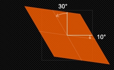

2D 常用的变形函数： tranlate() 、 scale() 、 rotate() 、 skew() 、 matrix() 。
示例：
下图描述了skew(30deg, 10deg)的工作原理：

transform-origin 用来指定元素变形的中心点位置，默认就是元素的中心点。
但是，对于位移 translate() 函数来说，无论 transform-origin 如何改变，都是以元素中心点为基准进行位移，例如：
示例1和示例2中的虚线框是元素的原始位置，实线框是位移之后的位置。示例1的 transform-origin 是50% 50%，而示例2是100% 100%，但是从最终偏移效果来看，两者的结果是一样的，所以 tranform-origin 对 translate() 函数并没有影响。
3D 常用变形函数： translate3d() 、 translate() 、 scale3d() 、 scaleZ() 、 rotate3d() 、 rotateX() 、 rotateY() 、 rotateZ() 、 perspective() 、 matrix3d() 。
transform-style 的取值为 flat 或者 preserve-3d 。下面的例子展示了两者的差别：
从示例中可以看出， preserve-3d 会让子元素在父元素变形的基础上继续变形，而 flat 则会消除父元素变形对子元素变形带来的影响。
理解：
对于第一种 div.container1 元素的 transform-style 为 flat 的情形，表明其所有子元素在 2D 空间中呈现，于是相对于 2D 平面（就可以理解为显示器的那个平面）做变形；对于第二种 div.container1 元素的 transform-style 为 preserve-3d 的情形，表明其所有子元素在 3D 空间中呈现，于是相对于当前 div.container1 为基准的平面做变形。